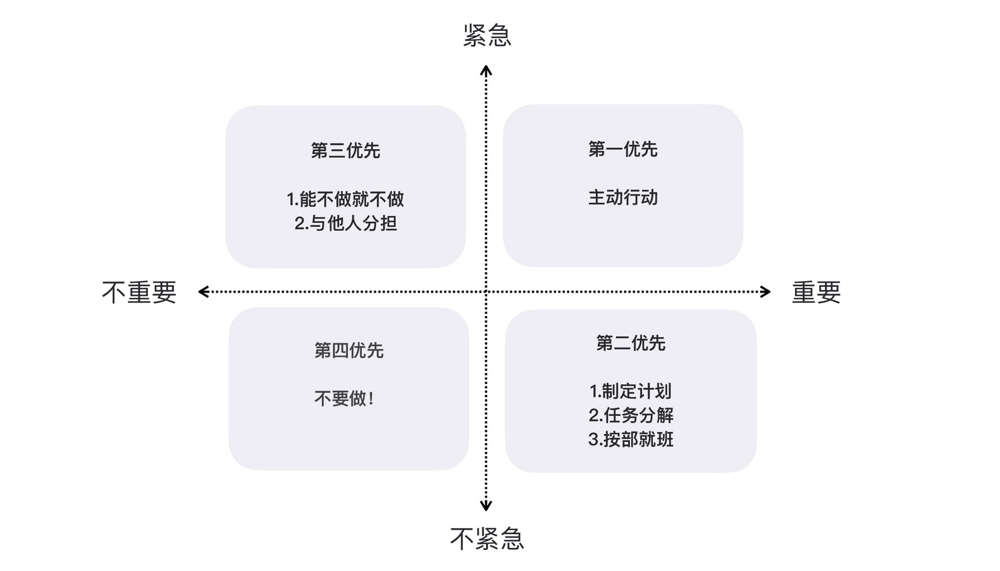

- 00 开篇词 程序员解决的问题，大多不是程序问题.md.html
- 01 10x程序员是如何思考的？.md.html
- 02 以终为始：如何让你的努力不白费？.md.html
- 03 DoD的价值：你完成了工作，为什么他们还不满意？.md.html
- 04 接到需求任务，你要先做哪件事？.md.html
- 05 持续集成：集成本身就是写代码的一个环节.md.html
- 06 精益创业：产品经理不靠谱，你该怎么办？.md.html
- 07 解决了很多技术问题，为什么你依然在“坑”里？.md.html
- 08 为什么说做事之前要先进行推演？.md.html
- 09 你的工作可以用数字衡量吗？.md.html
- 10 迭代0_ 启动开发之前，你应该准备什么？.md.html
- 11 向埃隆·马斯克学习任务分解.md.html
- 12 测试也是程序员的事吗？.md.html
- 13 先写测试，就是测试驱动开发吗？.md.html
- 14 大师级程序员的工作秘笈.md.html
- 15 一起练习：手把手带你分解任务.md.html
- 16 为什么你的测试不够好？.md.html
- 17 程序员也可以“砍”需求吗？.md.html
- 18 需求管理：太多人给你安排任务，怎么办？.md.html
- 19 如何用最小的代价做产品？.md.html
- 20 为什么世界和你的理解不一样？.md.html
- 21 你的代码为谁而写？.md.html
- 22 轻量级沟通：你总是在开会吗？.md.html
- 23 可视化：一种更为直观的沟通方式.md.html
- 24 快速反馈：为什么你们公司总是做不好持续集成？.md.html
- 25 开发中的问题一再出现，应该怎么办？.md.html
- 26 作为程序员，你也应该聆听用户声音.md.html
- 27 尽早暴露问题： 为什么被指责的总是你？.md.html
- 28 结构化：写文档也是一种学习方式.md.html
- 29 “懒惰”应该是所有程序员的骄傲.md.html
- 30 一个好的项目自动化应该是什么样子的？.md.html
- 31 程序员怎么学习运维知识？.md.html
- 32 持续交付：有持续集成就够了吗？.md.html
- 33 如何做好验收测试？.md.html
- 34 你的代码是怎么变混乱的？.md.html
- 35 总是在说MVC分层架构，但你真的理解分层吗？.md.html
- 36 为什么总有人觉得5万块钱可以做一个淘宝？.md.html
- 37 先做好DDD再谈微服务吧，那只是一种部署形式.md.html
- 38 新入职一家公司，怎么快速进入工作状态？.md.html
- 39 面对遗留系统，你应该这样做.md.html
- 40 我们应该如何保持竞争力？.md.html
- 划重点 “综合运用”主题内容的全盘回顾.md.html
- 划重点 “自动化”主题的重点内容回顾汇总.md.html
- 划重点 一次关于“沟通反馈”主题内容的复盘.md.html
- 划重点 关于“以终为始”，你要记住的9句话.md.html
- 划重点 关于“任务分解”，你要重点掌握哪些事？.md.html
- 加餐 你真的了解重构吗？.md.html
- 总复习 重新审视“最佳实践”.md.html
- 总复习 重新来“看书”.md.html
- 答疑解惑 如何分解一个你不了解的技术任务？.md.html
- 答疑解惑 如何在实际工作中推行新观念？.md.html
- 答疑解惑 如何管理你的上级？.md.html
- 答疑解惑 持续集成、持续交付，然后呢？.md.html
- 答疑解惑 持续集成，一条贯穿诸多实践的主线.md.html
- 结束语 少做事，才能更有效地工作.md.html
- 捐赠
18 需求管理：太多人给你安排任务，怎么办？
你好，我是郑晔。
上一讲我们讲了需求的分解，我以用户故事为例，给你讲了我们应该把大的需求拆分成小的需求，但是不是只要把需求拆开了就万事大吉了呢？显然不是。今天我们再来探讨另一个与需求强相关的话题：需求管理。
需求管理？许多程序员的第一直觉通常是，这要么是产品经理的事，要么是项目经理的事，跟我有什么关系？我知道很多人会这么想，可我想说的是，如果你不了解需求是怎么管理的，即便是进行了需求分解，最终的结果很有可能依然是你深陷泥潭苦苦挣扎而不自知。
为什么这么说呢？我给你讲一个发生在我身边的故事。
最无脑的需求管理法：老板说的
有一次，我们组织了一次各团队负责人的吐槽大会，让大家把遇到的问题在台面上“摆”一下。一个开发团队的负责人说：“我这边倒排期太严重了，每个产品经理到我这里都说上线日期已经定好了，我这边资源有限，实在是抗不住了。”
出于好奇，有人问：“这些任务都一样重要吗？”
这个负责人无奈地摇摇头，“他们都说自己的任务重要。”
“他们凭什么说自己的任务重要呢？”我也问了一个问题。
这个负责人说：“他们告诉我，是老板说的。”
这是不是一个很熟悉的场景？一堆任务压过来，只是因为这是老板的一句话。我们的老板都是这么不近人情吗？其实，大概率来看，并不是。
就凭一句“老板说的”，我们就可以判断出，产品经理缺乏对需求管理应有的理解。而研发团队也因为无脑地接受了需求，几乎将自己压垮。
这时候，CTO 发话了：“口头的东西不算数，如果他们说是老板说的，那就让老板发邮件确认。”
我很认可CTO的说法，但我并不放心那个开发团队的负责人，于是我问他：“你会让产品经理这么去做吗？”果然，他犹豫了。
“产品经理可能不会和老板这么说。那你去说好了。”我们又给他提了个建议。显然，他更犹豫了，毕竟要面对大老板。
针对这种情况，我们又给出了一个解决办法，“如果你担心产品经理不这么做，你可以直接发邮件给老板，同时抄送 CTO。”
“对，可以这么做”，CTO 把责任扛了过去。这个负责人心里一下子有底了。
是不是有种似曾相识的感觉？其实，这个故事只要再往下延伸一点，就到了我们程序员身边。
作为程序员，我们面临的场景往往是，一个需求不明就里地来了，你的周末假期全部泡汤，因为你的负责人会和你说，这是老板说的。
软件行业有个段子：做软件，最理想的交付日期是什么时候？答案是昨天，其次是尽快。所有提出业务需求的人都恨不得需求早就做好了。但事实总是那么不如人意，所以，他们只能寄希望于需求被尽快实现。
如果我们等着所有需求都开发好了再上线呢？这就是当年所谓瀑布模型做的事，放在二十年前，这种做法还有生存空间，但今天这种做法显然已经不合时宜了。
关于如何做软件，我们已经讨论了很多，关键点就在于这个世界有太多的不确定，我们只好把产品的“一部分”开发好，送上线。
这就引出了一个问题，到底是选择“哪部分”优先上线呢？我们必须在宏大的理想和骨感的现实中作出取舍。这也就牵扯出需求管理的本质，实际上是个优先级的问题。
需求的优先级
“来自老板”，这是判断优先级最简单的答案，也是推卸责任的一个答案。其潜台词是，压力大不怪我，要怪就怪老板去。“来自老板”不应该成为优先做事的指标。
首先，我们要明确一点，优先级这种事大家也是可以谈的，大多数能当老板的人都是可以讲道理的。但要和老板谈，我们得知道怎么讲道理。准备一些基础知识，才能与各级老板探讨怎么安排工作的优先级。
为什么要区分优先级？因为时间是有限的，有限的时间内你能完成工作的上限是一定的。
怎么充分利用好有限的时间，这其实是一个时间管理的问题。所以，我们完全可以借鉴时间管理领域的一些优秀实践，帮助我们更有效地明辨优先级。
谈到时间管理，一个有效的时间管理策略是艾森豪威尔矩阵（Eisenhower Matrix），这是由美国前总统艾森豪威尔开发出的一个工具。
这个工具到了史蒂芬·柯维（Stephen Richards Covey）手里得到了发扬光大，他那本著名的《高效能人士的七个习惯》书籍将其推广至世界各地。也许这个名字你不太熟悉，看一下下面这个图你就知道了。
- 它将事情按照重要和紧急两个维度进行划分，也就形成了四个部分：重要且紧急，重要不紧急，不重要且紧急，不重要不紧急。
用几个程序员生活中的例子帮你理解一下。让系统不能正常运行的线上故障，就属于重要且紧急事情，不赶紧解决，就影响公司的正常运营。团队对系统升级改造就属于重要不紧急：改造好，性能也好，可维护性也得到提升；不改造，一时半会也能用。一些临时任务都属于紧急不重要，而刷朋友圈则属于既不紧急也不重要。
按照时间管理的理念，重要且紧急的事情要立即做。重要但不紧急的事情应该是我们重点投入精力的地方。紧急但不重要的事情，可以委托别人做。不重要不紧急的事情，尽量少做。
这个矩阵带给我们思维上最大的改变是，让人意识到事情和事情不是等价的。如果不把精力放在重要的事情上，到最后可能都变成紧急的事情。
比如，我们放任系统不做升级改造，过多的技术债会让系统的问题越来越多，新需求实现的速度越来越慢，最后几个看起来不大的需求就足以让团队加班加点，天怒人怨。
把这个思路带回到我们现实的需求管理中，你会发现，其实团队面临的各种需求所采用的优先级排序方式，基本上都是按照紧急程度排列的，但它们是否真的重要呢？
如果你把这个问题抛给需求的提出者，我几乎可以肯定，他们给你的答案是，他们提出的需求就是重要的。一种可能是，他们也分不清重要和紧急的差别，正如有时候我们也糊涂一样。
对于这样的场景，我们要做的就是多问一些问题。我在“精益创业：产品经理不靠谱，你该怎么办？”文章中说过，默认所有需求都不做，直到弄清楚为什么要做这件事。
同样，需求也没那么重要，直到产品经理能说明白它为什么重要，尤其是为什么比其他需求重要。如果一个产品经理不能把几个需求排出优先级，你就可以把上面学到的内容给他讲一遍。
还有另一种可能，他给你的需求在他工作的上下文中，确实是最重要的内容了。但当有多个需求来源时，我们该如何确认哪个需求是最重要的呢？这时，才到了真正需要老板出场的时刻。
站在老板面前
在“解决了很多问题，为什么你依然在‘坑’里？”文章中，我曾经讲过，大家不要局限于程序员这个角色，不同角色真正的差异是工作上下文的不同。每个人都在自己的上下文里工作，上下文也就局限了很多人的视野。
试想，两个产品经理出现在你面前，一个告诉你，公司要拓展新方向，这个功能要做；另一个却说，公司要进一步盈利，那个功能必须做。
在你看来，他们两个说得都对，听上去都挺重要的。但骨感的现实是，你把两件事都接下来，等着你的是累死都完不成的任务。
这个时候，我们能做的是什么呢？跳出这个上下文，到更大的上下文中。你判断不了哪个需求更重要，就请更高一级的老板来判断。
有了基础知识的储备，我们终于可以站在了老板面前。你可以告诉老板：我资源有限，需要将这两个需求排个序，看哪个更重要。我的上下文有限，需要你帮我判断一下。
老板会和你说这两个需求的起源，扩展盈利的需求是竞争对手都已经有了，客户也问这边要，再不做会影响客户关系，尤其是新财年快到了，下个阶段的合同会受到影响。而另外的新业务是某天一个高端聚会上得到的新启发，想尝试一下，他也不确定这个想法能带来多少收益，就让产品部门试一下。
听了老板的信息，你顿时明白这两件事的重要性，你也知道该如何面对两个产品经理了。
老板比你们的上下文大，因为他有看待这个问题更多的维度。所以，在你们眼里无比纠结的事情，老板几句话就云开雾散了，在他眼里，那根本不叫事。
如果你看过刘慈欣的《三体》，就会知道，这其实是“降维攻击”。另一个你可能熟悉的说法叫大局观。我经常和人说，当员工想不明白的事，换成老板的视角就全明白了。
我鼓励每个程序员在更大的上下文中工作，也就是想让人获得更多的思考维度。而今天的内容主要告诉你，如果自己的上下文不足时，我们可以引入新的元素，比如征求老板意见，扩大自己的上下文。
再发散讲几句，为人做事同样要不断扩展自己的上下文，这也就是我们常说的涨见识。
很多所谓的人生难题不过是因为见识有限造成的。比如，如果你觉得公司内总有人跟你比技术，莫不如把眼光放得长远一些，把自己放在全行业的水平上去比较。因为你是为自己的职业生涯在工作，而不是一个公司。
总结时刻
需求分解之后，最重要的是，排列需求的优先级。优先级的排列方式有很多，我们可以借鉴时间管理的方法，把事情按照重要和紧急的维度进行划分，得到了四个象限。我们要尽可能把精力放在重要的事情上，而不是把紧急的事情当成优先级排序的方式。
需求分解成一个个小块，其实也分解了原本合一的上下文。如果想要有效地管理需求，尤其是确定事情的重要程度，一种方式是找回丢失的上下文。如果我们自己无法判断上下文，一种好的办法是，引入外部更大的上下文。
如果今天的内容你只能记住一件事，那请记住：尽量做最重要的事。
最后，我想请你分享一下，你的团队在日常的需求管理中，还遇到哪些问题呢？欢迎在留言区写下你的想法。
感谢阅读，如果你觉得这篇文章对你有帮助的话，也欢迎把它分享给你的朋友。
© 2019 - 2023 Liangliang Lee. Powered by gin and hexo-theme-book.